Informática Básica
Cuidados necessários
Ao aprender com os computadores, notebooks e tablets ajudam a gente a estudar, trabalhar e nos divertir, mas precisa de um adulto responsável!
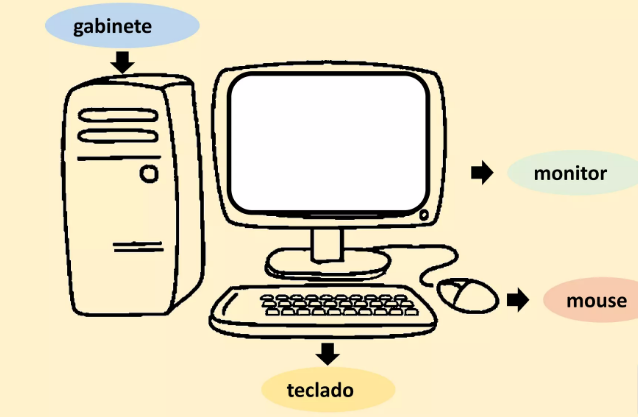
Partes do Computador
Os computadores contém função do monitor, gabinete, teclado e mouse para o funcionamento do seu PC.
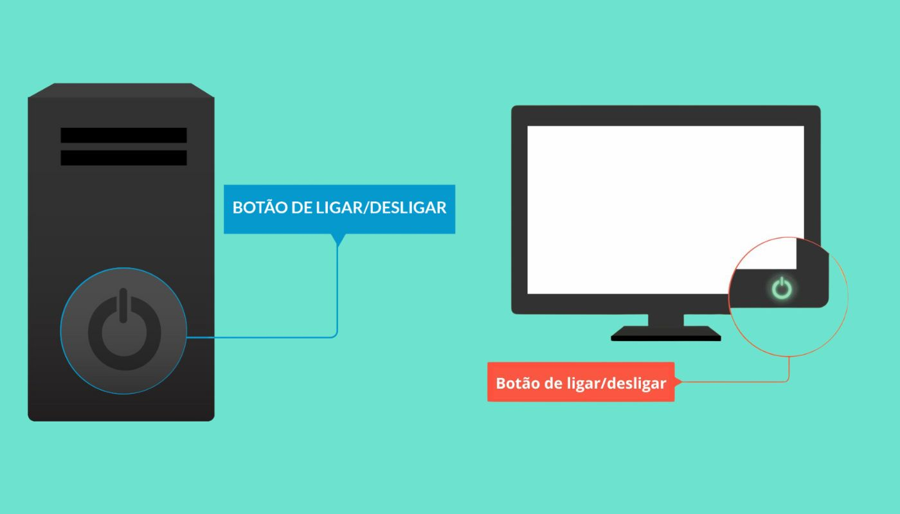
Ligar e Desligar
Veja onde fica o botão de energia no gabinete e no monitor para ligar seu equipamento com segurança.
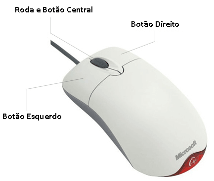
O Mouse Ratudo
O mouse ratudo tem o botão esquerdo (clique/seleção), o botão direito (opções) e a ropinha central.
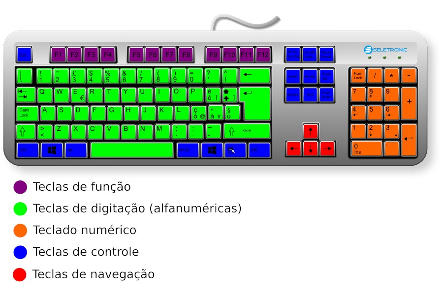
Teclado Grandão
Nele tem a divisão das teclas: digitação, teclas de função, navegação e o teclado numérico.
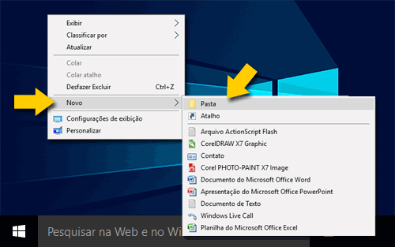
Criando Pastas
Para criar pastas basta usar o botão direito na área de trabalho e em novo clique em pasta escolha o nome que quiser, será importante para organizar suas pastas de tarefas.
Jogos Educativos por Idade
Clique na sua idade para ver os jogos correspondentes:
Jogos de Matemática
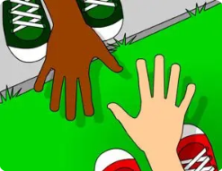
Eu Sei Contar
Conte os elementos e aprenda a sequência numérica inicial.
JOGAR AGORA!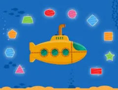
Formas Geométricas
Identifique as formas geométricas pelo caminho de maneira divertida!
JOGAR AGORA!Jogos de Português
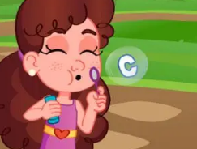
Alfabeto de Sabão
Estoure bolhas de sabão e aprenda as letras do alfabeto.
JOGAR AGORA!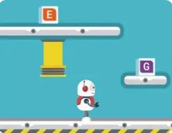
Fábrica de Palavras
Junte as letrinhas e forme suas primeiras palavras.
JOGAR AGORA!Cantinho da Leitura - Livros Digitais
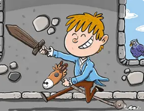
Pedro, o Imperador do Brasil
Conheça a história de Dom Pedro e descubra acontecimentos importantes sobre a história do nosso país de forma ilustrada.
LER LIVRO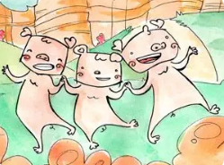
Os Três Porquinhos
A clássica história dos três porquinhos construtores e a lição sobre dedicação e trabalho bem feito.
LER LIVRO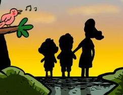
Amigos do Meio Ambiente
Uma aventura educativa sobre como reciclar, economizar água e cuidar do planeta Terra com carinho.
LER LIVRONossos Amigos do Céu
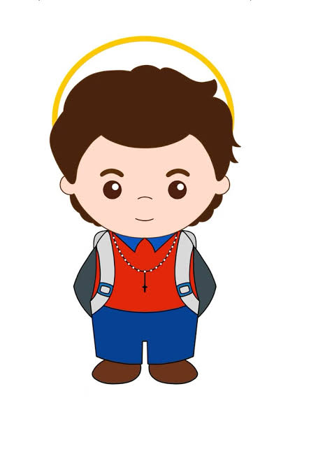
São Carlo Acutis
Um jovem da nossa época que amava videogames e computadores! Ele usava a internet para espalhar o amor a Deus e ajudar as pessoas.
ASSISTIR VÍDEOSão Francisco de Assis
Amava os passarinhos, os cães e toda a natureza. Ensinou que devemos cuidar de todas as criações de Deus com muita paz e amor.
ASSISTIR VÍDEOSanta Teresinha
Ensinou a pequena via: fazer as pequenas coisas do dia a dia (como arrumar a cama ou sorrir) com um amor gigante!
ASSISTIR VÍDEO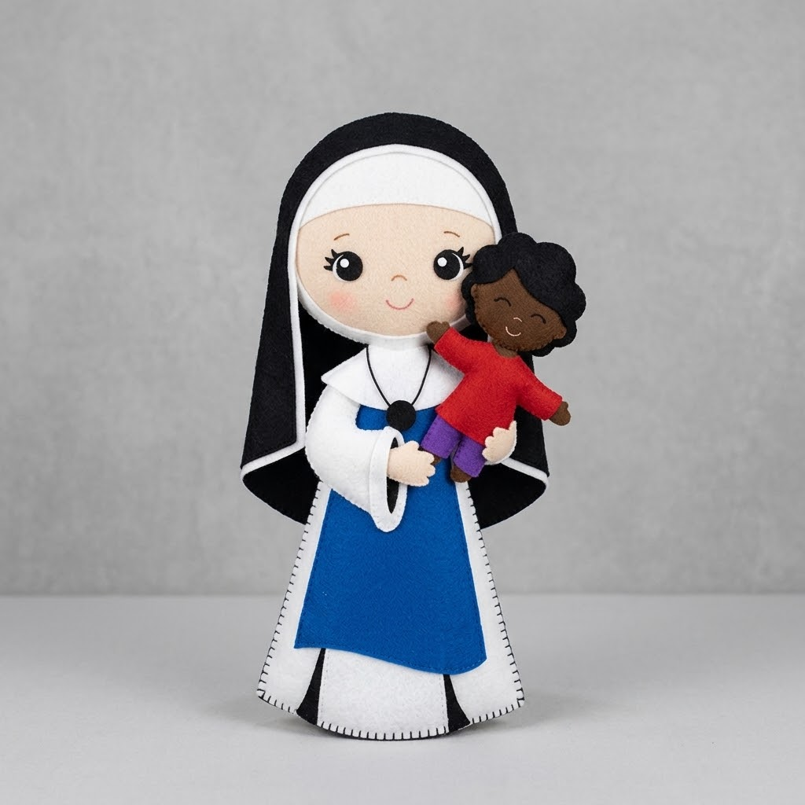
Santa Dulce dos Pobres
Conhecida como o Anjo Bom da Bahia, ela dedicou toda a sua vida a acolher e cuidar dos doentes, idosos e crianças necessitadas com um amor infinito!
ASSISTIR VÍDEOSanto Antônio
Sempre ajudava os mais necessitados repartindo o pão e ensinando a Bíblia com palavras cheias de carinho e sabedoria.
ASSISTIR VÍDEOHistórias da Bíblia (Turminha do Céu)

A Criação do Mundo
Deus criou o céu, as estrelas, a terra e todos os animais com muito amor! Venha descobrir como tudo começou.
ASSISTIR VÍDEO
Esaú e Jacó
Dois irmãos gêmeos bem diferentes que aprenderam a valiosa lição do perdão e da união em família.
ASSISTIR VÍDEO
Balaão e a Mula
Uma jumentinha corajosa começou a conversar para ajudar o profeta Balaão a ouvir o conselho de Deus!
ASSISTIR VÍDEO
O Cerco de Jericó
Josué e o povo marcharam ao redor das muralhas gigantes tocando trombetas até que os muros caíram com o poder da fé!
ASSISTIR VÍDEO 🎬
O Rei Salomão
Salomão foi o rei mais sábio de todos! Ele pediu inteligência a Deus para governar o seu povo com justiça e bondade.
ASSISTIR VÍDEO 🎬
Mais Histórias da Bíblia
Quer assistir a todos os outros episódios? Clique no botão abaixo para acessar a playlist completa da Turminha do Céu!
VER PLAYLIST 📺Conheça a Escola Games
De onde vêm os nossos jogos e livros digitais?
A Escola Games é uma plataforma educacional gratuita desenvolvida especialmente para crianças do Ensino Fundamental. Ela oferece jogos interativos, livros digitais e atividades educativas que auxiliam no aprendizado de Matemática, Português, Geografia e Ciências de forma leve e divertida!
VISITAR ESCOLA GAMESPastoral do Menor em Nova Cruz - RN
Transformando Vidas com Educação, Informática e Amor!
A Pastoral do Menor em Nova Cruz/RN é um projeto social e comunitário dedicado ao acolhimento, proteção integral e promoção dos direitos das crianças e adolescentes.
Por meio de oficinas educativas, acompanhamento escolar e aulas práticas de Informática Básica e Matemática, o projeto incentiva a inclusão digital e o protagonismo jovem sob a coordenação de Antonio Magnus Dantas Xavier e Maria Luiza de Medeiros Teixeira e as atuais bolsistas Celina Camila Souza de Oliveira, Genife lorany vicente de luna e Isly Gabriely Galvão dos Santos.
Registros das Nossas Atividades:
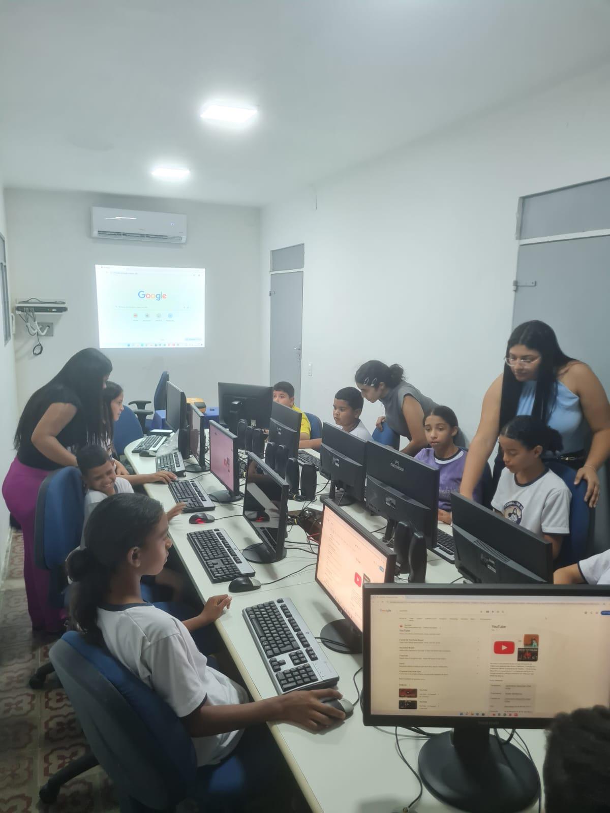